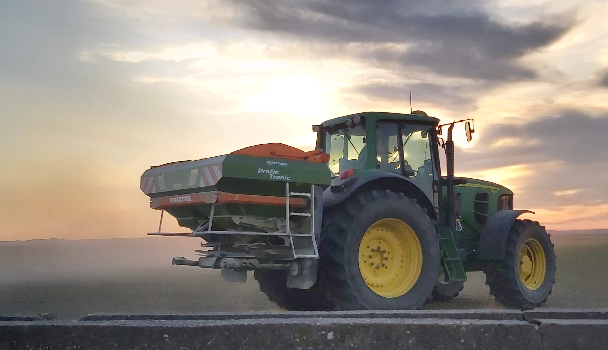
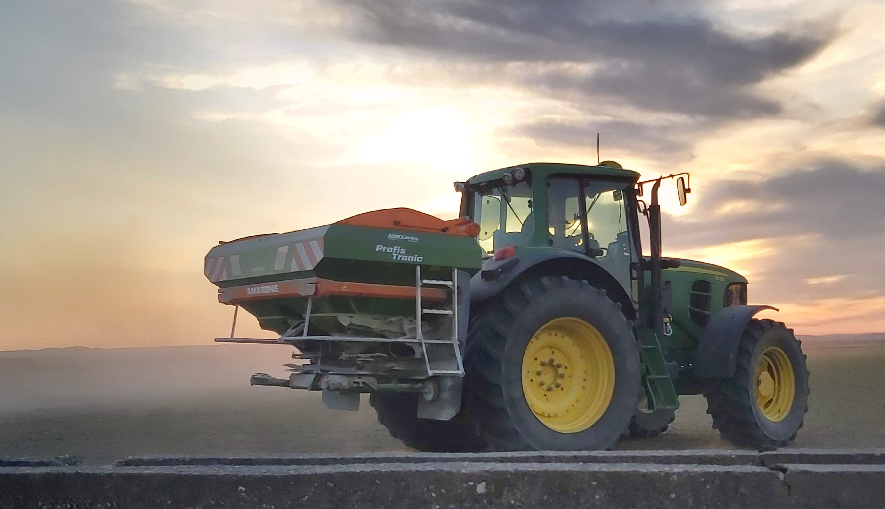

Sector principal de la zona
La agricultura, perteneciente al sector primario es la principal fuente de ingresos de la zona
Destacan entre otros cultivos especialmente los tomates junto con el maiz, arroz y las aceitunas
La agricultura, perteneciente al sector primario es la principal fuente de ingresos de la zona
Destacan entre otros cultivos especialmente los tomates junto con el maiz, arroz y las aceitunas
